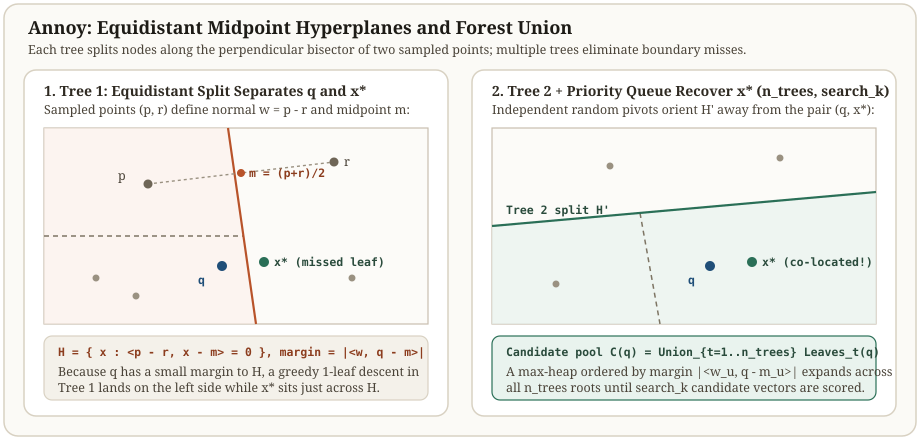

Annoy: bisect random point pairs and merge a forest
Both KD-trees and hierarchical k-means route queries through a single deterministic tree—a structure where any split boundary near the query can separate it from a true nearest neighbor unless expensive backtracking explores sibling subtrees. Annoy (Approximate Nearest Neighbors Oh Yeah, developed at Spotify) instead builds a forest of $n_{\text{trees}}$ independent randomized binary trees.
Each internal node samples two points from its subset and splits along their perpendicular bisector. At query time, a single priority queue traverses all $n_{\text{trees}}$ trees simultaneously, ordering alternate branches by how close the query landed to each splitting hyperplane until search_k candidate points are gathered.
How a second random tree recovers a neighbor split by the first
Four points · two random midpoint trees · one candidate union
Points sit at $x_0=(0,0)$, $x_1=(0,2)$, $x_2=(2,0)$, and $x_3=(2,2)$, with query $q=(0.9,1.8)$. The top-2 nearest neighbors are $x_1$ ($d^2=0.85$) and $x_3$ ($d^2=1.25$). Tree 1 splits vertically at $x=1.0$ (between $x_0$ and $x_2$), placing $q$ and $x_1$ in the left leaf $\{x_0,x_1\}$ while stranding $x_3$ across the split. Tree 2 splits horizontally at $y=1.0$ (between $x_0$ and $x_1$), placing $q$ into $\{x_1,x_3\}$ and recovering both top-2 neighbors in the leaf union.


Fixed query q = (0.9, 1.8). True top-2 neighbors are x1 (d2 = 0.85) and x3 (d2 = 1.25).
| Tree or candidate union | Sampled pivot pair (p, r) | Bisector equation | Primary leaf visited by q | Top-2 recall |
|---|---|---|---|---|
| Tree 1 (vertical split) | x0 = (0, 0), x2 = (2, 0) | x = 1.0 (margin = 0.1) | {x0, x1} | 1 / 2 (misses x3) |
| Tree 2 (horizontal split) | x0 = (0, 0), x1 = (0, 2) | y = 1.0 (margin = 0.8) | {x1, x3} | 2 / 2 (finds x1, x3) |
| Forest union (n_trees = 2) | Both trees combined | Union of primary leaves | {x0, x1, x3} | 2 / 2 (exact top-2) |
Scroll horizontally to compare the columns. Keyboard: focus the table, then use the left and right arrow keys.
Two-point equidistant hyperplane splits
When a node subset $S_u \subset \mathbb{R}^d$ exceeds the leaf capacity $K_{\text{leaf}}$, Annoy picks two points $p, r \in S_u$ (or runs a few iterations of 2-means on $S_u$) and defines the bisecting hyperplane normal $w_u$ and midpoint $m_u$:
Every point with $g_u(x) \le 0$ is closer to $r$ than to $p$ and routes to the left child; every point with $g_u(x) > 0$ is closer to $p$ and routes to the right child. Because $w_u = p - r$ is a chord between two actual data vectors, the split automatically aligns with the subspace occupied by the local data cluster rather than cutting empty ambient coordinates.
Margin priority queue and mmap shared memory
To search across $T = n_{\text{trees}}$ trees with candidate budget search_k, Annoy initializes a max-heap $Q$ containing all $T$ root nodes with priority $+\infty$. When visiting an internal node $u$ with current path priority $p_{\text{cur}}$ and query margin $s = \langle w_u, q - m_u \rangle / \lVert w_u\rVert_2$, the closer child keeps priority $p_{\text{cur}}$ while the farther child is pushed with priority $\min(p_{\text{cur}}, -|s|)$:
| Parameter / feature | Mechanism | Operational effect |
|---|---|---|
| n_trees ($T$) | Number of independent random midpoint trees built at indexing time | Increases build time and on-disk size linearly; reduces the probability $p^T$ that a neighbor is separated in all trees |
| search_k ($B$) | Total candidate vectors collected from leaves before exact reranking | Smoothly trades query latency $O(\text{search\_k}\cdot d)$ for recall without rebuilding the index |
| POSIX mmap file layout | Fixed-stride array of nodes and vectors mapped directly from disk | Allows multiple worker processes on the same host to share one physical RAM page-cache copy |
Verify Annoy forest union and margin priority-queue search in Python
import heapq
import numpy as np
q = np.array([0.9, 1.8])
points = {
"x0": np.array([0.0, 0.0]),
"x1": np.array([0.0, 2.0]),
"x2": np.array([2.0, 0.0]),
"x3": np.array([2.0, 2.0]),
}
def sq_l2(u, v):
diff = u - v
return float(np.dot(diff, diff))
def make_split_tree(p_id, r_id, all_ids):
p, r = points[p_id], points[r_id]
w = p - r
w_norm = w / np.linalg.norm(w)
m = 0.5 * (p + r)
left = [pid for pid in all_ids if np.dot(w_norm, points[pid] - m) <= 0.0]
right = [pid for pid in all_ids if np.dot(w_norm, points[pid] - m) > 0.0]
return {"w": w_norm, "m": m, "left": left, "right": right}
# Tree 1 bisects x0=(0,0) and x2=(2,0) -> vertical split x = 1.0
tree1 = make_split_tree("x0", "x2", list(points))
# Tree 2 bisects x0=(0,0) and x1=(0,2) -> horizontal split y = 1.0
tree2 = make_split_tree("x0", "x1", list(points))
def primary_leaf(tree, query):
margin = float(np.dot(tree["w"], query - tree["m"]))
return tree["left"] if margin <= 0.0 else tree["right"]
leaf1 = primary_leaf(tree1, q)
leaf2 = primary_leaf(tree2, q)
union_candidates = sorted(set(leaf1) | set(leaf2))
ranked = sorted((round(sq_l2(q, points[pid]), 4), pid) for pid in union_candidates)
assert leaf1 == ["x0", "x1"]
assert leaf2 == ["x1", "x3"]
assert [pid for _, pid in ranked[:2]] == ["x1", "x3"]
print("Tree 1 leaf:", leaf1, "Tree 2 leaf:", leaf2, "Union top-2:", ranked[:2])Check the operating assumptions
Why does Annoy push all n_trees roots with priority +infinity instead of searching one tree completely before starting the next?
The primary leaf of every tree contains points that never crossed a single hyperplane relative to q in that tree. Visiting all n_trees primary leaves first gathers the highest-probability candidates before spending budget crossing split boundaries in any single tree.
Can you insert new vectors into an existing Annoy index after build() has been called?
No. Once build(n_trees) finalizes the static node array for mmap sharing, the index is read-only; adding new documents requires either rebuilding the forest or querying a small delta index alongside the main forest.
How does Annoy's margin priority differ from an exact KD-tree or Ball Tree lower bound?
An Annoy node stores only its single splitting hyperplane (w_u, m_u), not a full bounding box or radius of all ancestor splits. The priority min(p_cur, -|s|) is a fast heuristic margin rather than an exact Euclidean distance to an intersection of half-spaces.
Sources
- Erik Bernhardsson: Annoy (Approximate Nearest Neighbors Oh Yeah), Spotify open-source library and architecture notes.
- Dasgupta and Freund: Random Projection Trees and Low Dimensional Manifolds, STOC 2008.